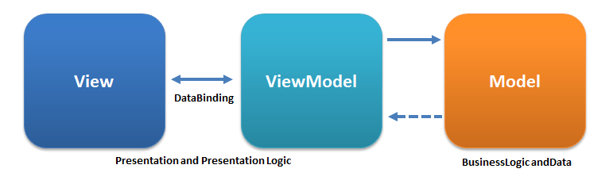

KnockoutJS is a library written in JavaScript that is based on MVVM pattern that helps developers building rich and responsive websites.
KnockoutJS was developed and is maintained as an open source project by Steve Sanderson, a Microsoft employee on July5, 2010.
Model-View-ViewModel (MVVM) is an architectural design pattern for developing software applications. MVVM was developed by Microsoft Architect John Gossman in 2005.
View is nothing but User Interface created using HTML elements and CSS styling.
HTML DOM elements are bound to data model using KnockoutJS. It provides two-way data binding between View and ViewModel using 'data-bind' concept, which means any updates done in UI are reflected in data model and any changes done in data model are reflected in UI.
ViewModel is a Javascript object which contains necessary properties and functions to represent data. View and ViewModel are connected together with declarative data-bind concept used in HTML. This makes it easy to change HTML without changing ViewModel. KnockoutJS takes care of automatic data refresh between them through use of Observables.
Custom bindings is used for application specific behaviors. This way knockout gives direct control of how you want to transform your data into HTML.
Model is domain data on server and it gets manipulated as and when request is sent/received from ViewModel.
The data could be stored in database, cookie or other form of persistent storage. KnockoutJS does not worry about how it is stored. It is up to programmer to communicate between stored data and KnockoutJS.
KO works nicely with jQuery (or Prototype, etc.)
Knockout is available through the Bower package manager
To give users the fastest download speeds, prefer to reference knockout.js on one of the following third-party CDNs:
<script type='text/javascript' src='knockout-3.4.0.js'></script>
View-model declaration:
var viewModel = {
personName: 'Bob',
personAge: 123
};
The data-bind attribute isn’t native to HTML, though it is perfectly OK (it’s strictly compliant in HTML 5, and causes no problems with HTML 4 even though a validator will point out that it’s an unrecognized attribute). But since the browser doesn’t know what it means, you need to activate Knockout to make it take effect.
The name is <span data-bind="text: personName"></span>
Apply binding:
ko.applyBindings(viewModel);
Rendered:
The name is Bob
or:
ko.applyBindings(viewModel, document.getElementById('someElementId'))
One of the key benefits of KO is that it updates your UI automatically when the view model changes. Declare model properties as observables, because these are special JavaScript objects that can notify subscribers about changes, and can automatically detect dependencies.
var viewModel = {
personName: ko.observable('Bob'),
personAge: ko.observable(123)
};
viewModel.personName.subscribe(function(newValue) {
alert("The person's new name is " + newValue);
});
Read and write operations which can be performed on Observables.
viewModel.yourName();
viewModel.yourName('Bob');
viewModel.yourName('Bob').yourAge(45);
ObservableArray works with collection of objects. This is very useful feature when you are dealing with complex applications containing multiple type of values and changing their status frequently based on user actions.
Syntax:
this.arrayName = ko.observableArray(); // It's an empty array
Observable array only tracks which objects in it are added or removed. It does not notify if individual object's properties are modified.
Computed Observable is a function which is dependent on one or more Observables and will automatically update whenever its underlying Observables (dependencies) change.
Computed Observables can be chained.
function ViewModel() {
var me = this;
me.firstName = ko.observable('Bob');
me.lastName = ko.observable('Smith');
me.fullName = ko.computed(function() {
return this.firstName() + " " + this.lastName();
}, me);
}
A computed observable will be re-evaluated whenever one of the observables that it accessed in its last evaluation changes. Dependency detection is done each time that the computed observable is evaluated. In the snippet below, if enabled is true, then it will not depend on disabledHelp. However, if enabled becomes false, then it will no longer depend on enabledHelp and will start depending on disabledHelp.
//this computed observable will always depend on this.enabled and will additionally depend on either this.enabledHelp or this.disabledHelp.
viewModel.helpText = ko.computed({
return this.enabled() ? this.enabledHelp() : this.disabledHelp();
}, viewModel);
The name is <span data-bind="text: fullName"></span>
The tracking algorithm goes like this:
The tracking algorithm goes like this:
In complex applications, with multiple, intertwined dependencies, updating a single observable might trigger a cascade of computed observables, manual subscriptions, and UI binding updates. These updates can be expensive and inefficient if unnecessary intermediate values are pushed to the view or result in extra computed observable evaluations.
Using deferred updates ensures that computed observables and bindings are updated only after their dependencies are stable.
ko.options.deferUpdates = true;
Or, specifically making certain observables deferred:
this.data = ko.observableArray().extend({ deferred: true });